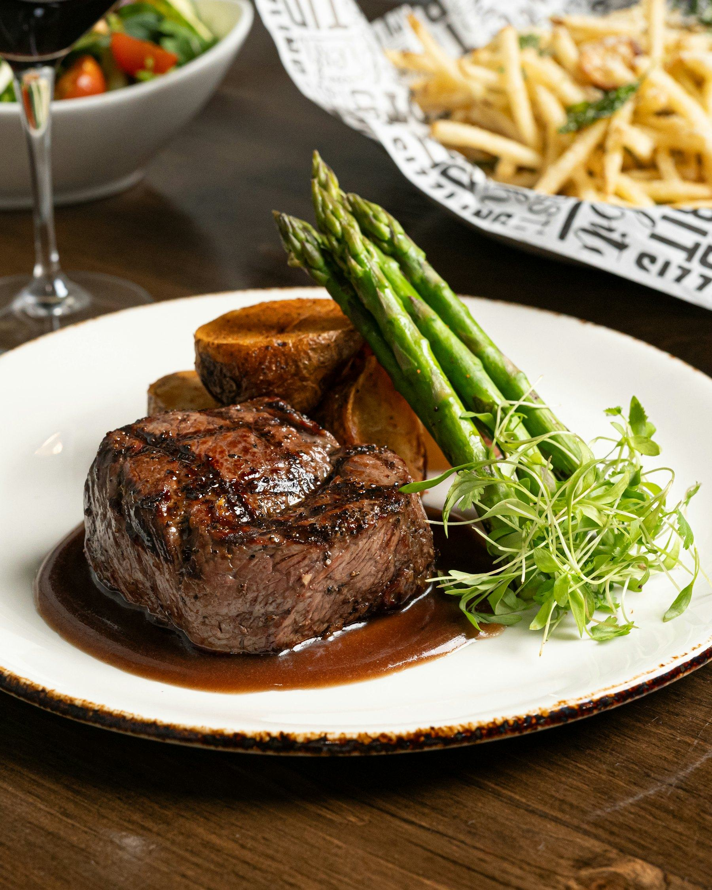
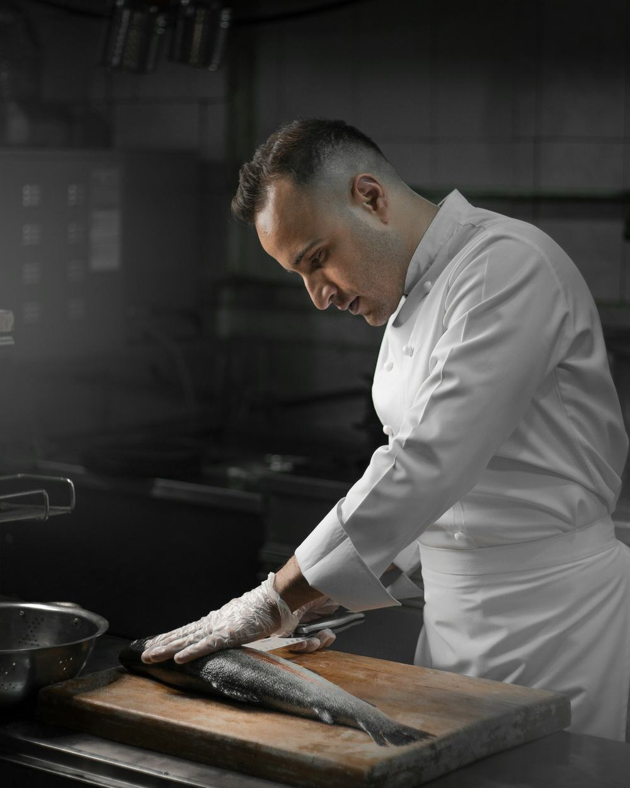
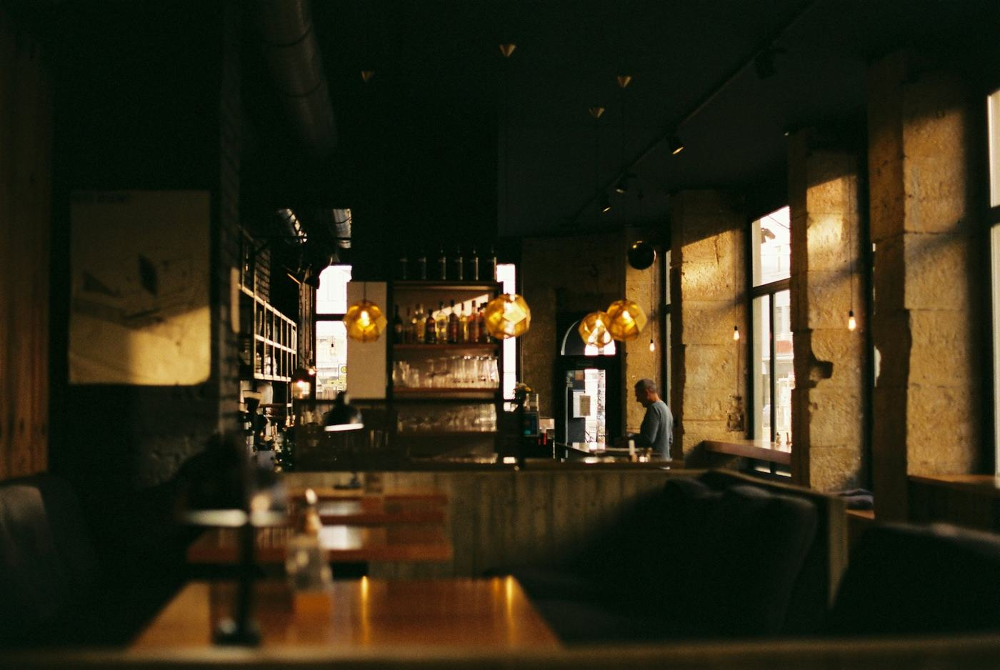

Vinohradské bistro, kde se vaří z toho, co doveze dodavatel do sta kilometrů. Otevřená kuchyně, šest míst u baru bez rezervace.

Kuchyně
Ne proto, že je to trend. Proto, že když znám člověka, který mi to pěstuje, můžu mu zavolat a zeptat se, co je zrovna dobré. Kachny vozíme z Řepína, hovězí z Vysočiny, ryby z Nových Mlýnů. Když něco dojde, škrtneme to z karty a nedovážíme náhradu odjinud.
Nemám rád jídlo, které se tváří jinak, než jaké je. Líčka jsou líčka — osm hodin v troubě, vedle celer a nic dalšího. Na talíři u nás není nic, co by se nedalo sníst.
Adam Vrbatašéfkuchař a spolumajitel, v Kořeni od otevření v roce 2019

„Kachna, kterou si pamatujete ještě druhý den. A účet, ze kterého vás nebolí hlava.“
Ukázkový citát
Na skutečném webu sem patří konkrétní recenze s jménem autora a odkazem na zdroj — jeden dobrý citát váží víc než pět log v řadě.
Rezervace
Stačí šest údajů. Žádný účet, žádné heslo, žádný souhlas s newsletterem.
Proč jste dostali tenhle odkaz
Všechno nad touhle sekcí je ukázka — smyšlený podnik, smyšlené ceny. Ale stránka funguje přesně tak, jak by fungovala ta vaše: menu v telefonu čitelné bez zvětšování, otevírací doba, která se sama pozná podle dne, a rezervace, co přijde rovnou vám do schránky.
Pokud dnes posíláte hostům PDF s jídelním lístkem nebo profil na sociální síti, tohle je rozdíl, který poznají hned.
↓ Než web rozešlete, doplňte tady své kontakty
Napište mi dvě věty o svém podniku a pošlu vám návrh a cenu. Nezávazně.